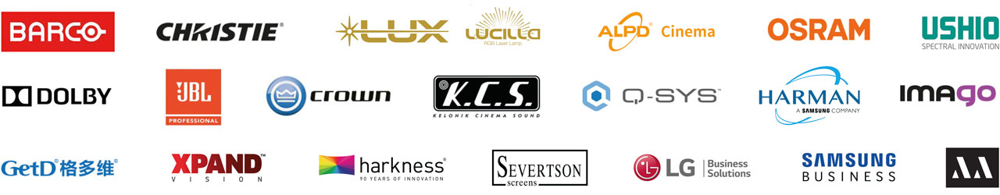

Videoproiettori DCI
Installazione, allineamento e manutenzione di proiettori DCI-compliant, laser e lampada, con le automazioni per la gestione dei servizi di sala.
Dal noleggio delle pellicole in 16 mm ai proiettori laser DCI. Progettiamo, installiamo e manteniamo impianti di proiezione e audio per sale cinematografiche, teatri, arene estive e centri eventi.
Sigra Film è un'impresa fiorentina che si occupa di installazione e manutenzione di impianti cinematografici, nel settore pubblico e privato. Nasce a Firenze nel 1954 per iniziativa di Paolo, che per oltre quarant'anni ha operato nel settore cinematografico, lasciando poi al figlio Andrea le redini della società.
Negli anni l'azienda ha diversificato i servizi offerti e, grazie a investimenti mirati, si è dotata di attrezzature all'avanguardia che le permettono di collocarsi nella fascia alta del settore. I lavori sono eseguiti in ogni fase sotto la supervisione del titolare, con un team formato internamente e una rete di consulenti e partner accreditati.
Collaboriamo da sempre con Cinemeccanica S.p.A., azienda leader italiana nelle installazioni di impianti cinematografici.
103 strutture seguite fra Toscana e territori vicini. I punti sono approssimati e senza nomi: la mappa racconta il territorio coperto, non chi sono i nostri clienti.
Un servizio a 360°: seguiamo tutte le attività pre e post installazione, dalla progettazione alla consegna delle attrezzature audio e video presenti in sala.
Installazione, allineamento e manutenzione di proiettori DCI-compliant, laser e lampada, con le automazioni per la gestione dei servizi di sala.
Configurazione e supporto su server cinema Dolby e Doremi e su media player per la proiezione di contenuti in DCP, gestione delle chiavi KDM.
Installazione e taratura degli impianti audio in sala, incluso Dolby Atmos per esperienze davvero immersive.
Schermi di proiezione di qualsiasi metratura e realizzazione completa di sale, teatri e arene estive all'aperto, chiavi in mano.
Installazione di poltrone, tendaggi ed effetti scenici su palchi teatrali, per completare l'allestimento della sala.
Punto cardine dell'azienda: diagnosi a distanza delle apparecchiature installate tramite software e hardware di gestione dedicati, per un intervento rapido e risolutivo.
Organizziamo festival e rassegne in qualsiasi location, con maxischermi LCD, LED, OLED e laser, videowall e videoproiettori da 7.000 a 32.000 lumen.
Partecipiamo ai corsi di formazione sulle attrezzature cinematografiche e sulle innovazioni che il mercato propone, per mantenere lo standard del team.
Sale cinematografiche, teatri e arene estive. Clicca su un'immagine per ingrandirla.
Strumenti sviluppati da noi per semplificare la gestione quotidiana del cinema. Si aprono in una nuova scheda.
Collaboriamo con Cinemeccanica Milano dal 1954 e trattiamo da sempre i migliori marchi professionali audio e video.

Raccontaci cosa ti serve: ti richiamiamo con una soluzione concreta e i tempi di intervento.